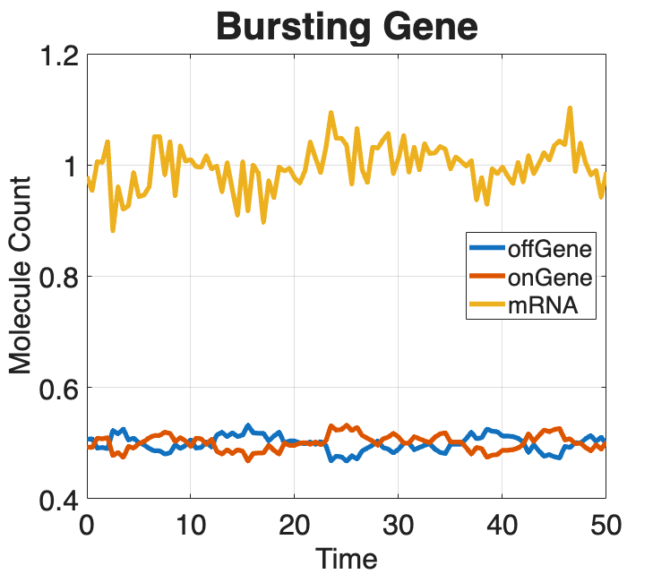
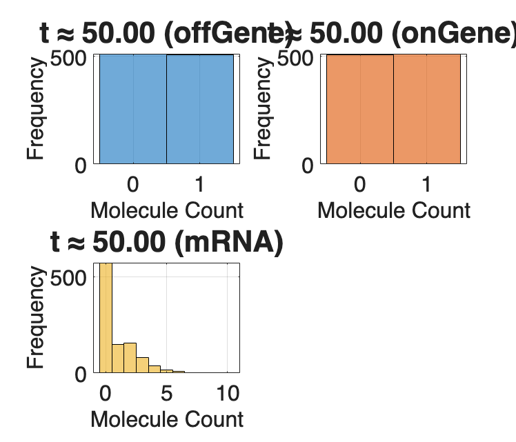
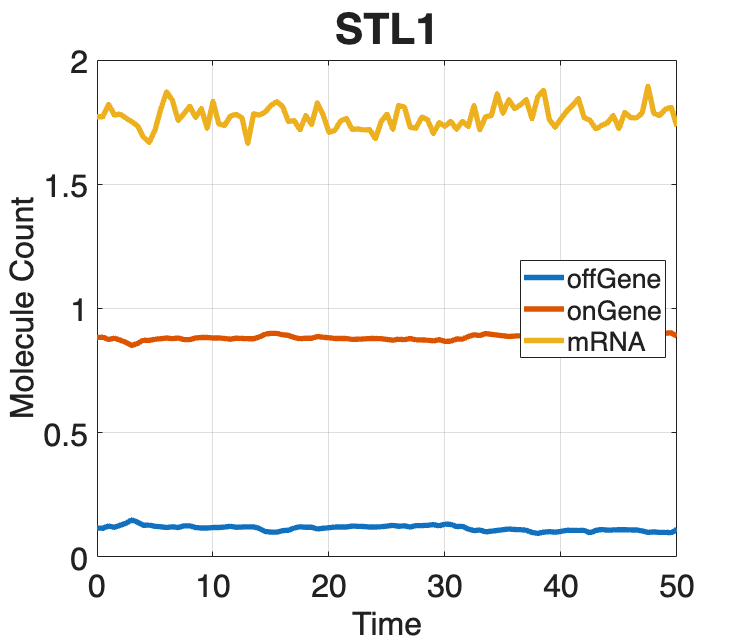
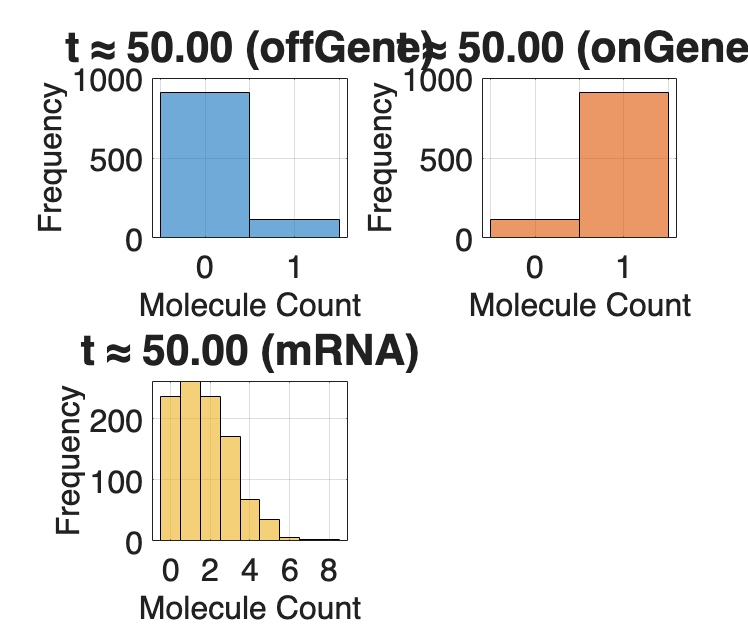
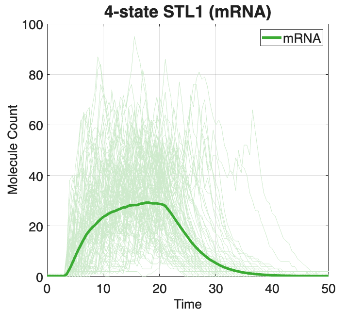
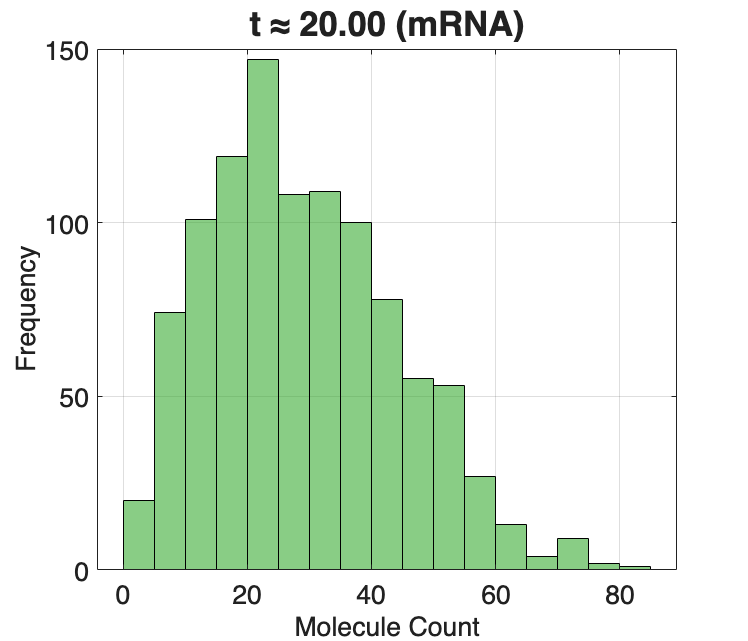
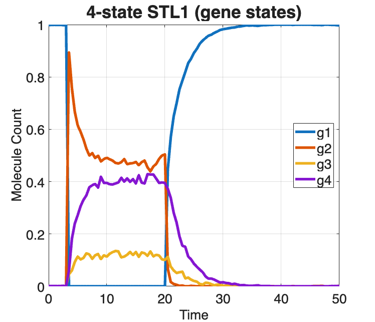
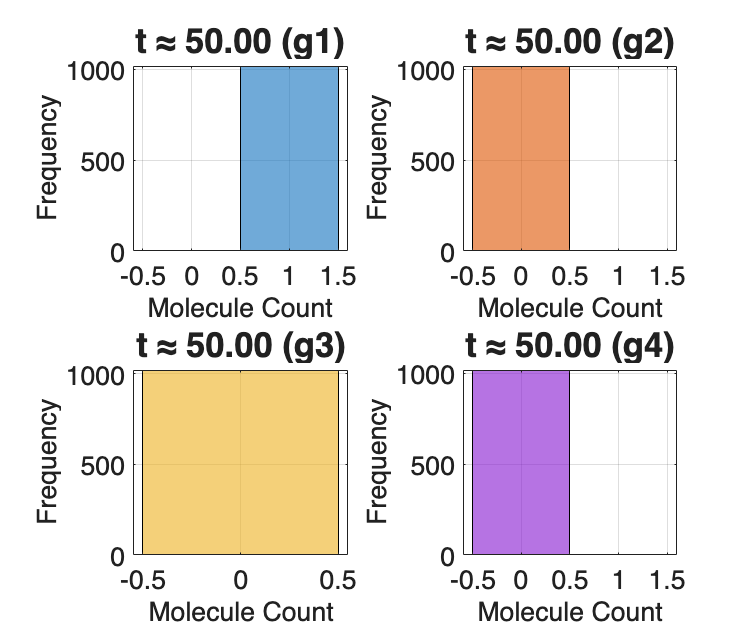

Contents
- SSIT/Examples/example_3_SolveSSITModels_SSA
- Section 2.2: Finding and visualizing master equation solutions
- Preliminaries
- Ex(1): Use Gillepsie's Stochastic Simulation Algorithm (SSA)
- Run Gillepsie's Stochastic Simulation Algorithm (SSA) and analyse
- trajectories
- Model:
- Make a video of the SSA trajectories being plotted:
- Ex(2): Use Gillepsie's Stochastic Simulation Algorithm (SSA)
- STL1 model:
- Make a video of the SSA trajectories being plotted:
- Ex(3): Use Gillepsie's Stochastic Simulation Algorithm (SSA)
- 4-state STL1 model:
- Make a video of the SSA trajectories being plotted:
- Save SSA models & solutions
SSIT/Examples/example_3_SolveSSITModels_SSA
%%%%%%%%%%%%%%%%%%%%%%%%%%%%%%%%%%%%%%%%%%%%%%%%%%%%%%%%%%%%%%%%%%%%%%%%%%%
Section 2.2: Finding and visualizing master equation solutions
* Compute Stochastic Simulation Algorithm (SSA) trajectories
%%%%%%%%%%%%%%%%%%%%%%%%%%%%%%%%%%%%%%%%%%%%%%%%%%%%%%%%%%%%%%%%%%%%%%%%%%%
Preliminaries
Use the models from example_1_CreateSSITModels clear close all
% example_1_CreateSSITModels % Load the models created in example_1_CreateSSITModels % load('example_1_CreateSSITModels.mat') % View model summaries: Model.summarizeModel STL1.summarizeModel STL1_4state.summarizeModel % Set the times at which distributions will be computed: Model.tSpan = linspace(0,50,101); STL1.tSpan = linspace(0,50,101); STL1_4state.tSpan = linspace(0,50,101); %%%%%%%%%%%%%%%%%%%%%%%%%%%%%%%%%%%%%%%%%%%%%%%%%%%%%%%%%%%%%%%%%%%%%%%%%%%
Species:
offGene; IC = 1; discrete stochastic
onGene; IC = 0; discrete stochastic
mRNA; IC = 0; discrete stochastic
Reactions:
Reaction 1:
s1: 1*offGene --> 1*onGene
w1: kon * offGene
Reaction 2:
s2: 1*onGene --> 1*offGene
w2: koff * onGene
Reaction 3:
s3: NULL --> 1*mRNA
w3: kr * onGene
Reaction 4:
s4: 1*mRNA --> NULL
w4: dr * mRNA
Model Parameters:
{'kon' } {[0.2000]}
{'koff'} {[0.2000]}
{'kr' } {[ 10]}
{'dr' } {[ 5]}
Species:
offGene; IC = 1; discrete stochastic
onGene; IC = 0; discrete stochastic
mRNA; IC = 0; discrete stochastic
Reactions:
Reaction 1:
s1: 1*offGene --> 1*onGene
w1: kon * offGene
Reaction 2:
s2: 1*onGene --> 1*offGene
w2: onGene*koff/(1+Hog1)
Reaction 3:
s3: NULL --> 1*mRNA
w3: kr * onGene
Reaction 4:
s4: 1*mRNA --> NULL
w4: dr * mRNA
Input Signals:
Hog1(t) = (a0+a1*exp(-r1*t)*(1-exp(-r2*t))*(t>0))
Model Parameters:
{'kon' } {[0.2000]}
{'koff'} {[0.2000]}
{'kr' } {[ 10]}
{'dr' } {[ 5]}
{'a0' } {[ 5]}
{'a1' } {[ 10]}
{'r1' } {[0.0040]}
{'r2' } {[0.0100]}
Species:
g1; IC = 1; discrete stochastic
g2; IC = 0; discrete stochastic
g3; IC = 0; discrete stochastic
g4; IC = 0; discrete stochastic
mRNA; IC = 0; discrete stochastic
Reactions:
Reaction 1:
s1: 1*g1 --> 1*g2
w1: k12*g1
Reaction 2:
s2: 1*g2 --> 1*g1
w2: (max(0,k21o*(1-k21i*Hog1)))*g2
Reaction 3:
s3: 1*g2 --> 1*g3
w3: k23*g2
Reaction 4:
s4: 1*g3 --> 1*g2
w4: k32*g3
Reaction 5:
s5: 1*g3 --> 1*g4
w5: k34*g3
Reaction 6:
s6: 1*g4 --> 1*g3
w6: k43*g4
Reaction 7:
s7: NULL --> 1*mRNA
w7: kr1*g1
Reaction 8:
s8: NULL --> 1*mRNA
w8: kr2*g2
Reaction 9:
s9: NULL --> 1*mRNA
w9: kr3*g3
Reaction 10:
s10: NULL --> 1*mRNA
w10: kr4*g4
Reaction 11:
s11: 1*mRNA --> NULL
w11: dr*mRNA
Input Signals:
Hog1(t) = A*(((1-(exp(1)^(-r1*(t-t0))))*exp(1)^(-r2*(t-t0)))/(1+((1-(exp(1)^(-r1*(t-t0))))*exp(1)^(-r2*(t-t0)))/M))^n*(t>t0)
Model Parameters:
{'t0' } {[ 3.1700]}
{'k12' } {[ 78]}
{'k21o'} {[ 192000]}
{'k21i'} {[ 3200]}
{'k23' } {[ 0.4020]}
{'k34' } {[ 7.8000]}
{'k32' } {[ 1.6200]}
{'k43' } {[ 2.2800]}
{'dr' } {[ 0.2940]}
{'kr1' } {[ 0.0468]}
{'kr2' } {[ 0.7200]}
{'kr3' } {[ 59.4000]}
{'kr4' } {[ 3.2400]}
{'r1' } {[ 0.0041]}
{'r2' } {[ 0.4260]}
{'A' } {[9.3000e+09]}
{'M' } {[6.4000e-04]}
{'n' } {[ 3.1000]}
Ex(1): Use Gillepsie's Stochastic Simulation Algorithm (SSA)
to solve the time evolution of state space probabilities for the bursting gene example model from example_1_CreateSSITModels
%%%%%%%%%%%%%%%%%%%%%%%%%%%%%%%%%%%%%%%%%%%%%%%%%%%%%%%%%%%%%%%%%%%%%%%%%%%
Run Gillepsie's Stochastic Simulation Algorithm (SSA) and analyse
trajectories
Model:
Create a copy of the bursting gene model for SSA:
Model_SSA = Model;
% Set solution scheme to SSA:
Model_SSA.solutionScheme = 'SSA';
% 'nSimsPerExpt' is an SSA option that defaults to 100, sets the number
% of simulations performed per experiment (set small number for demo):
Model_SSA.ssaOptions.nSimsPerExpt=10;
% 'verbose' defaults to false, prints completed sim number to screen.
Model_SSA.ssaOptions.verbose=true;
% A negative initial time is used to allow model to equilibrate
% before starting (burn-in). Large burn-in times cause long run times.
Model_SSA.tSpan = [-100,Model_SSA.tSpan];
% Set the initial time:
Model_SSA.initialTime = Model_SSA.tSpan(1);
% Run iterations in parallel with multiple cores, or execute serially:
Model_SSA.ssaOptions.useParallel = true;
% Run SSA:
Model_SSA.Solutions = Model_SSA.solve;
% Plot SSA trajectories and means:
Model_SSA.plotSSA('all', 10, Model_SSA.species, {'linewidth',4}, ...
Title="Bursting Gene", MeanOnly=true, TitleFontSize=32,...
AxisLabelSize=24, TickLabelSize=24, LegendFontSize=20,...
LegendLocation='east', XLabel='Time', YLabel='Molecule Count');
1020 SSA Runs Completed 
Make a video of the SSA trajectories being plotted:
makeSSAvideo(Model_SSAsoln, 'all', 100, Model_SSA.species, ... 'Model_SSA_video')
%%%%%%%%%%%%%%%%%%%%%%%%%%%%%%%%%%%%%%%%%%%%%%%%%%%%%%%%%%%%%%%%%%%%%%%%%%%
Ex(2): Use Gillepsie's Stochastic Simulation Algorithm (SSA)
to solve the time evolution of state space probabilities for the time-varying STL1 yeast model from example_1_CreateSSITModels
%%%%%%%%%%%%%%%%%%%%%%%%%%%%%%%%%%%%%%%%%%%%%%%%%%%%%%%%%%%%%%%%%%%%%%%%%%%
STL1 model:
Create a copy of the time-varying STL1 yeast model for SSA:
STL1_SSA = STL1;
% Set solution scheme to SSA:
STL1_SSA.solutionScheme = 'SSA';
% 'nSimsPerExpt' is an SSA option that defaults to 100, sets the number
% of simulations performed per experiment (set small number for demo):
STL1_SSA.ssaOptions.nSimsPerExpt=10;
% 'verbose' defaults to false, prints completed sim number to screen:
STL1_SSA.ssaOptions.verbose=true;
% A negative initial time is used to allow model to equilibrate
% before starting (burn-in). Large burn-in times cause long run times.
STL1_SSA.tSpan = [-100,STL1_SSA.tSpan];
% Set the initial time:
STL1_SSA.initialTime = STL1_SSA.tSpan(1);
% Run iterations in parallel with multiple cores, or execute serially:
STL1_SSA.ssaOptions.useParallel = true;
% Run SSA:
STL1_SSA.Solutions = STL1_SSA.solve;
% Plot SSA trajectories and means:
STL1_SSA.plotSSA('all', 100, STL1_SSA.species, {'linewidth',4}, ...
Title="STL1", MeanOnly=true, TitleFontSize=32,...
AxisLabelSize=24, TickLabelSize=24,...
LegendFontSize=20, LegendLocation='east',...
XLabel='Time', YLabel='Molecule Count');
1020 SSA Runs Completed 
Make a video of the SSA trajectories being plotted:
makeSSAvideo(STL1_SSAsoln, 'all', 100, STL1_SSA.species, ... 'STL1_SSA_video')
%%%%%%%%%%%%%%%%%%%%%%%%%%%%%%%%%%%%%%%%%%%%%%%%%%%%%%%%%%%%%%%%%%%%%%%%%%%
Ex(3): Use Gillepsie's Stochastic Simulation Algorithm (SSA)
to solve the time evolution of state space probabilities for the 4-state time-varying STL1 yeast model from example_1_CreateSSITModels
%%%%%%%%%%%%%%%%%%%%%%%%%%%%%%%%%%%%%%%%%%%%%%%%%%%%%%%%%%%%%%%%%%%%%%%%%%%
4-state STL1 model:
Create a copy of the time-varying STL1 yeast model for SSA:
STL1_4state_SSA = STL1_4state;
% Set solution scheme to SSA:
STL1_4state_SSA.solutionScheme = 'SSA';
% 'nSimsPerExpt' is an SSA option that defaults to 100, sets the number
% of simulations performed per experiment (set small number for demo):
STL1_4state_SSA.ssaOptions.nSimsPerExpt=10;
% 'verbose' defaults to false, prints completed sim number to screen.
STL1_4state_SSA.ssaOptions.verbose=true;
% A negative initial time is used to allow model to equilibrate
% before starting (burn-in). Large burn-in times cause long run times.
STL1_4state_SSA.tSpan = [-100,STL1_4state_SSA.tSpan];
% Set the initial time:
STL1_4state_SSA.initialTime = STL1_4state_SSA.tSpan(1);
% Run iterations in parallel with multiple cores, or execute serially:
STL1_4state_SSA.ssaOptions.useParallel = true;
% Run SSA:
STL1_4state_SSA.Solutions = STL1_4state_SSA.solve;
% Plot SSA trajectories and means (mRNA):
STL1_4state_SSA.plotSSA('all', 100, STL1_4state_SSA.species(5),...
{'linewidth',4}, Title="4-state STL1 (mRNA)", MeanOnly=false,...
TitleFontSize=26, AxisLabelSize=20, TickLabelSize=20,...
LegendFontSize=20, LegendLocation='northeast', HistTime=20,...
XLabel='Time', YLabel='Molecule Count', Colors=[0.23,0.67,0.20]);
% Plot SSA trajectories and means (gene states):
STL1_4state_SSA.plotSSA('all', 100, STL1_4state_SSA.species(1:4),...
{'linewidth',4}, Title="4-state STL1 (gene states)",...
MeanOnly=true, TitleFontSize=26, AxisLabelSize=20,...
TickLabelSize=20, LegendFontSize=20, LegendLocation='east',...
XLabel='Time', YLabel='Molecule Count');
1020 SSA Runs Completed   
Make a video of the SSA trajectories being plotted:
makeSSAvideo(STL1_4state_SSAsoln, 'all', 100, ... STL1_4state_SSA.species, 'STL1_SSA_video_4state')
Save SSA models & solutions
saveNames = unique({'Model_SSA'
'STL1_SSA'
'STL1_4state_SSA'
});
save('example_3_SolveSSITModels_SSA',saveNames{:})